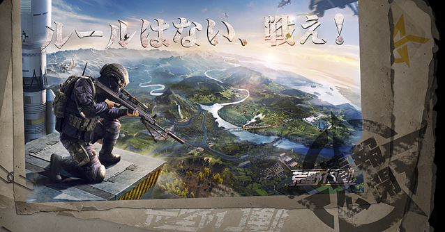

僕の好きなゲームは、荒野行動というゲームです。荒野行動は中国企業のNetEase Gamesが開発、運営するTPSバトルロイヤルゲームで、約100人のプレイヤーが無人島に降り立ち、最後の1人になるまで戦闘を繰り広げるゲームです。最近ではオフライン大会があり、優勝すると1000万円がもらえるようなイベントもあります。私は去年の7月に予選で勝ち上がり大阪まで行き、オフライン大会に出場しました。そこで勝つことはできませんでしたが、良い思い出となりました。現在も荒野行動を続けています。ぜひ遊んでみてください！！